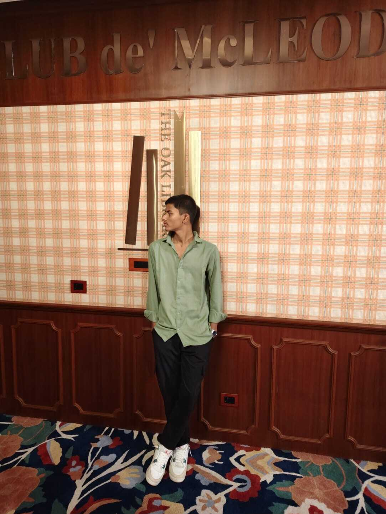

I'm Md Remon Islam, an aspiring software developer with a strong interest in building impactful and scalable digital solutions. Currently a Class 9 student at MLZS Jangipur , I've been actively exploring core areas of technology, including web development, artificial intelligence, and interactive applications. I believe in learning by doing — building real projects, experimenting with new technologies, and strengthening my programming and problem-solving skills. I'm deeply motivated to grow in software engineering and hope to pursue opportunities with leading technology organizations such as Microsoft or Google. Alongside my studies, I'm developing my own technology venture, SAIXORA Technology, with the vision of turning meaningful ideas into practical digital solutions. Beyond coding, I value consistency, adaptability, and continuous learning.
